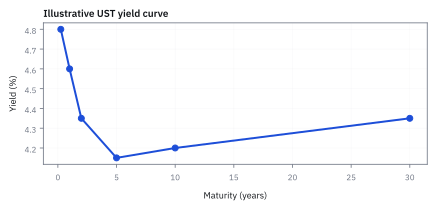
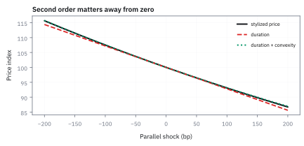
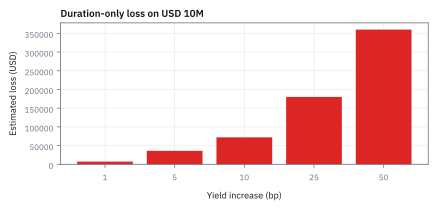
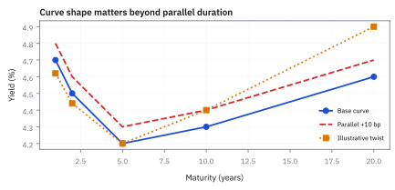

18.2 The Yield Curve, Duration, and Convexity
ราคา bond เปลี่ยนเพราะทั้งระดับและรูปทรงของ curve เปลี่ยน
พันธบัตรอายุ 3 ปี จ่าย coupon 4% ต่อปี (ปีละ \$40) และคืนเงินต้น \$1,000 ณ yield 5% ต่อปี หาก yield พุ่งขึ้น 100 bp ราคาพันธบัตรจะเปลี่ยนเป็นเท่าไร และการประมาณด้วย duration ร่วมกับ convexity แม่นยำเพียงใด?
เฉลย: ราคาปัจจุบันอยู่ที่ \$972.77 ($D_{\rm mod}=2.7470$ ปี, $C=10.3262$) เมื่อ yield ขึ้น 100 bp ราคาจริงลดลงเหลือ \$946.54 ขณะที่ duration อย่างเดียวประมาณได้ \$946.05 แต่เมื่อชดเชยด้วย convexity จะได้ \$946.55 ปิดช่องว่างความคลาดเคลื่อนได้ถึง 98.4%
ศัพท์ที่ใช้ในหัวข้อนี้
- yield curve
- ความสัมพันธ์ระหว่าง yield กับ maturity ณ วันเดียวกัน ใช้ discount cash flow และบอกว่า rate สำหรับ horizon ต่างกันไม่จำเป็นต้องเท่ากัน
- modified duration
- ความไวอันดับหนึ่งของราคา bond ต่อ yield change ขนาดเล็ก ใช้ประมาณ percentage price change และแปลง rate shock เป็น USD P&L
- convexity
- ความโค้งอันดับสองของความสัมพันธ์ระหว่าง bond price กับ yield ใช้แก้ approximation ของ duration เมื่อ shock ใหญ่ขึ้น
- basis point (bp)
- หน่วย rate ที่เท่ากับ 0.01% หรือ 0.0001 ใน decimal ใช้สื่อ yield move โดยไม่สับสนกับ percent ของราคา
- spread
- ส่วนต่างผลตอบแทนหรือราคาระหว่างสองสิ่งที่กำหนดชัดเจน ใช้วัดส่วนชดเชยความเสี่ยงหรือ trading cost ตามบริบท
- liquidity
- ความสามารถซื้อขายขนาดที่ต้องการใกล้ราคาที่เห็น ใช้ประเมินว่าราคา model แปลงเป็น execution ได้เพียงใด
- Mortgage-Backed Security (MBS)
- ตราสารหนี้ที่มีสัญญาเงินกู้บ้านหนุนหลัง ใช้ระดมทุนและส่งผ่านกระแสเงินสดจากผู้กู้ไปสู่ผู้ลงทุน
สัญลักษณ์ที่ใช้ในหัวข้อนี้
| สัญลักษณ์ | ความหมาย | หน่วย |
|---|---|---|
| $P$ | clean price ของ bond ต่อ \$100 par | USD per \$100 par |
| $y$ | yield-to-maturity ภายใต้ convention ที่กำหนด | 1/year |
| $D_{mod}$ | modified duration | years |
| $C$ | convexity | years squared |
| $\Delta y$ | parallel yield shock | 1/year |
ที่มาที่ไป: การวัดความไวของพันธบัตร ที่เกิดขึ้นในปี 1938
ก่อนหน้านั้น คนเทียบพันธบัตรกันด้วยอายุคงเหลือ ซึ่งเป็นตัวเลขที่ทำให้เข้าใจผิด เพราะพันธบัตรสองใบที่อายุเท่ากันแต่จ่ายดอกเบี้ยต่างกัน มีความไวต่ออัตราดอกเบี้ยไม่เท่ากันเลย
Frederick Macaulay เสนอในปี 1938 ให้ใช้ค่าเฉลี่ยถ่วงน้ำหนักของเวลาที่ได้รับเงินแทน โดยถ่วงด้วยมูลค่าปัจจุบันของแต่ละงวด
ตัวเลขนั้นทำหน้าที่สองอย่างพร้อมกัน คือเป็นเวลาเฉลี่ยที่เงินจริง ๆ กลับมา และเป็นความไวของราคาต่อการเปลี่ยนแปลงของอัตราดอกเบี้ย
แต่มันเป็นการประมาณด้วยเส้นตรง ซึ่งใช้ได้เฉพาะเมื่ออัตราขยับน้อย จึงต้องมีพจน์ความโค้งเพิ่มเข้ามา และในกรณี cash flow บวกคงที่และไม่มีสิทธิ์แฝง ความโค้งของราคาต่อ yield เป็นบวก
ปัญหาคือ curve ไม่ใช่ rate ตัวเดียว
ให้ U.S. Treasury note สมมติมี $D_{mod}=7.2$ years, $C=68$ years squared และ market value \$10 ล้าน สมมติ parallel shock +10 bp หรือ $\Delta y=0.001$ เพื่อสอน sensitivity; curve จริงอาจ twist และ bond มี cash flows หลายวัน ถ้า duration เป็นไม้บรรทัด convexity ก็คือการยอมรับว่าเส้นทางราคามันไม่ยอมตรงตามไม้บรรทัด
ขั้นที่ 1 — ลองด้วยมือ: พันธบัตรสองปีของหัวข้อ 18.1 เมื่อดอกเบี้ยขึ้น 1%
ก่อนสูตร เอาพันธบัตรสองปีของหัวข้อ 18.1 มาขึ้นดอกเบี้ย 1% แล้วดูว่าราคาตกเท่าไร และตัวเลขตัวเดียวทายได้ใกล้แค่ไหน
ราคาที่ 5% คือ 98.14 จากหัวข้อก่อน ขึ้นดอกเบี้ยเป็น 6% แล้วคิดใหม่ทั้งสองก้อน ราคาตกเหลือ 96.33 คือลด 1.84% ก้อนสองปี (94.33) ตกมากกว่าก้อนหนึ่งปี (3.81) เพราะถูกคิดลดสองรอบ
duration คือ “เวลาเฉลี่ยที่เงินกลับมา” ถ่วงด้วยมูลค่าปัจจุบัน: ก้อนหนึ่งปีมีน้ำหนัก 3.9% ก้อนสองปี 96.1% เฉลี่ยได้ 1.96 ปี เอา 1.05 มาหารได้ modified duration 1.87 แปลว่าดอกเบี้ยขึ้น 1% ราคาลงราว 1.87%
ค่าเดาแบบเส้นตรง −1.868% ต่ำกว่าของจริง −1.841% เล็กน้อย ส่วนต่าง 0.027% คือความโค้งที่เข้าข้างคนถือ (ราคาตกน้อยกว่าเส้นตรงบอก) ซึ่งขั้นที่ 4 จะเรียกว่า convexity
ขั้นที่ 2 — price จาก cash flows บน curve
ราคา bond คือผลรวมของเงินทุกงวดที่คิดลดแล้ว โดยแต่ละงวดใช้อัตราของอายุตัวเอง สี่บรรทัดนี้ชี้ว่าการบวกกันได้ไม่ใช่กฎคณิตศาสตร์ มันมาจากการที่ไม่มีเงินฟรีให้เก็บ ซึ่งเป็นเหตุผลเดียวกับที่ใช้ในหัวข้อ 14.4
คิดลดเงินก้อนเดียวด้วยผลของหัวข้อ 18.1 ได้ทันที คำถามคือบวกหลายก้อนเข้าด้วยกันได้หรือไม่
บรรทัดสองคือเหตุผล เงินแต่ละงวดเป็นสิทธิ์แยกกัน ซื้อขายแยกกันได้จริงในตลาด ถ้าราคารวมไม่เท่าผลบวกของราคาย่อย จะมีคนซื้อถูกขายแพงจนราคากลับมาเท่ากัน นี่ไม่ใช่กฎคณิตศาสตร์ แต่เป็นข้อบังคับของตลาด
บวกทุกงวดเข้าด้วยกันจึงได้ราคาพันธบัตร
บรรทัดสุดท้ายย้ำจุดที่พลาดบ่อย อายุต่างกันใช้ตัวคิดลดคนละตัว การใช้อัตราเดียวคิดลดทุกงวดเป็นการประมาณ ไม่ใช่นิยาม และเป็นคนละเรื่องกับ curve ที่หัวข้อ 20.1 จะสร้างขึ้นมา
ขั้นที่ 3 — duration approximation
แทนที่จะคำนวณราคาใหม่ทุกครั้งที่อัตราขยับ มีตัวเลขตัวเดียวที่บอกความไวได้ ห้าบรรทัดนี้แสดงว่าตัวเลขนั้นคือเวลาเฉลี่ยถ่วงน้ำหนักด้วยมูลค่า ไม่ใช่อายุคงเหลือของ bond และสองอย่างนี้ต่างกันมากเมื่อมี coupon สูง
เขียนราคาโดยใช้อัตราผลตอบแทน $y$ ตัวเดียวคิดลดทุกงวด ซึ่งช่วยให้หา derivative เทียบกับ yield ได้ตรงไปตรงมา
หา derivative ทีละงวดด้วยสูตรเลขชี้กำลัง เวลาของแต่ละงวดหล่นลงมาเป็นตัวคูณ แล้วดึงตัวร่วมออกมา ก้อนที่เหลือข้างในคือมูลค่าปัจจุบันของงวดนั้นพอดี
เอาราคาไปหารเพื่อให้เป็นเปอร์เซ็นต์ ก้อนที่ได้คือเวลาเฉลี่ยถ่วงน้ำหนักด้วยมูลค่า จึงมีหน่วยเป็นปี และเป็นที่มาของคำว่าอายุเฉลี่ย ไม่ใช่ชื่อที่ตั้งขึ้นลอย ๆ
บรรทัดสุดท้ายแทน derivative ด้วยอัตราส่วนของการเปลี่ยนแปลงเล็ก ๆ ซึ่งเป็นการประมาณเชิงเส้นตามหัวข้อ 12.2 และแม่นเฉพาะเมื่ออัตราขยับน้อย ส่วนที่คลาดคือความโค้ง ซึ่งเป็นเนื้อหาของขั้นถัดไป
ขั้นที่ 4 — เพิ่ม convexity
ความชันอย่างเดียวใช้ได้เมื่อขยับน้อย ๆ ถ้าขยับแรงต้องเติมพจน์ความโค้งเข้าไปด้วย และพจน์แก้นี้เป็นบวกสำหรับพันธบัตร cash flow บวกคงที่ในตัวอย่าง; callable bond หรือสินทรัพย์ที่ cash flow เปลี่ยนตามอัตราอาจมี effective convexity ติดลบ
พจน์ convexity ไม่มีเครื่องหมายลบ เพราะ yield shock ถูกยกกำลังสอง จึงได้ค่าเป็นบวกเสมอ
หา derivative ซ้ำได้ $P^{\prime\prime}(y)=\sum_i t_i(t_i+1)CF_i(1+y)^{-t_i-2}$ นิยาม convexity เป็น $C=P^{\prime\prime}/P$ การกระจาย Taylor series ให้ $\Delta P\approx P^{\prime}\Delta y+P^{\prime\prime}(\Delta y)^2/2$ เอา $P$ ไปหาร แล้วแทนสองชื่อที่นิยามไว้จึงได้สูตร
ขั้นที่ 5 — แปลง 10 bp เป็น USD
แปลงเป็นเงินจริงบน notional ที่ถืออยู่ ซึ่งเป็นตัวเลขที่โต๊ะความเสี่ยงดู
10 bp เท่ากับ 0.001 ใน decimal;
duration-only ให้ minus $72,000$ ส่วน convexity คืน $340$ จึงได้ estimated P and L minus $71,660$
ทีละชิ้น: $7.2\times0.001=0.0072$ ส่วน $\tfrac12(68)(0.001)^2=34\times10^{-6}=0.000034$ รวม $-0.0072+0.000034=-0.007166$ คูณ 10 ล้านได้ −\$71,660 convexity คืน \$340 จาก 72,000 คือ 0.5% ของขาดทุน สำหรับ 10 bp มันเล็ก แต่ที่ 100 bp พจน์กำลังสองโตร้อยเท่าเป็น \$34,000
ขั้นที่ 6 — การกระจาย Taylor series: ที่มาของพจน์ Convexity และเครื่องหมายบวกเสมอ
การกระจาย Taylor series แสดงให้เห็นว่า convexity เป็นคุณสมบัติทางโครงสร้างของพันธบัตรที่ไม่มี option แฝง โดยทำหน้าที่เป็นกันชนลดทอนผลขาดทุนเมื่อ yield พุ่งขึ้น และเร่งกำไรเมื่อ yield ปรับลดลง
เมื่อ yield ขยับ ราคาพันธบัตรไม่ได้เปลี่ยนเป็นเส้นตรง แต่โค้งเว้าขึ้นรูปตัวยู การกระจาย Taylor series อันดับสองช่วยให้เรามองเห็นทั้งความชันและส่วนโค้งของราคาพร้อมกัน
derivative อันดับหนึ่งให้ modified duration ที่มีเครื่องหมายลบ บ่งบอกว่าดอกเบี้ยขึ้นราคาต้องลง แต่ derivative อันดับสองจากการดิฟซ้ำดึงเลขชี้กำลัง $-(t_i+1)$ ลงมาคูณกับ $-t_i$ จนกลายเป็นบวกเสมอ
เนื่องจากเงินงวด $CF_i$ และเวลา $t_i$ เป็นบวก ผลรวมทั้งหมดจึงมากกว่าศูนย์ ทำให้ค่า convexity $C$ เป็นบวกอย่างไม่มีทางเลี่ยงสำหรับพันธบัตรทั่วไป
พจน์ $(\Delta y)^2$ ยกกำลังสองจึงเป็นบวกเสมอ ไม่ว่าดอกเบี้ยจะขึ้นหรือลง ความโค้งนี้จึงช่วยหนุนราคาเสมอ คือเวลาราคาขึ้นจะขึ้นมากกว่าเส้นตรง และเวลาราคาตกจะตกน้อยกว่าเส้นตรงทำนายไว้
ขั้นที่ 7 — DV01 และการคำนวณ Duration ในระบบ Continuous Compounding
หน่วยวัด DV01 แปลงความเสี่ยงดอกเบี้ยให้กลายเป็นจำนวนเงินจริงต่อ basis point ช่วยให้ผู้จัดการกองทุนสามารถ hedge ความเสี่ยงข้ามตราสารที่มี maturity ต่างกันได้อย่างแม่นยำ
บนโต๊ะเทรดไม่มีใครอยากนั่งคิดเป็นเปอร์เซ็นต์ทุกครั้ง จึงสร้างไม้บรรทัดชื่อ DV01 ขึ้นมา วัดเป็นเงินดอลลาร์ตรง ๆ ว่าถ้า yield ขยับ 1 basis point พอร์ตจะกำไรหรือขาดทุนเท่าไร
สำหรับพอร์ต \$10 ล้านที่มี duration 7.2 ปี ทุก ๆ 1 bp ที่ดอกเบี้ยขยับ พอร์ตจะเปลี่ยนมูลค่า \$7,200 ทันที ขยับ 10 bp ก็คูณสิบกลายเป็น \$72,000
เมื่อเปลี่ยนมาคิดแบบทบต้นต่อเนื่อง ความสัมพันธ์จะเรียบง่ายขึ้นอย่างยิ่ง เพราะ derivative ของ $e^{-yt_i}$ ไม่ต้องมีตัวหาร $1+y$ โผล่มา ทำให้ modified duration มีค่าเท่ากับ Macaulay duration พอดี
derivative อันดับสองก็ให้ convexity ที่คิดจากเวลาถ่วงน้ำหนักยกกำลังสอง $t_i^2$ โดยตรง ไม่ต้องมีพจน์ $t_i(t_i+1)$ มาเกะกะเหมือนแบบทบต้นรายงวด
ขั้นที่ 8 — คำนวณราคาพันธบัตร 3 ปี จากกระแสเงินสดแต่ละงวด
โจทย์หลัก: พันธบัตรอายุ 3 ปี จ่าย coupon 4% ต่อปี (\$40 ต่อปี) คืนเงินต้น \$1,000 สิ้นปีที่ 3 ณ yield 5% ต่อปี คำนวณมูลค่าปัจจุบันของแต่ละงวดแล้วรวมเป็นราคาพันธบัตร
คิดลดกระแสเงินสดทั้ง 3 งวดด้วย yield 5% ต่อปี งวดที่สามมีเงินต้น \$1,000 รวมกับดอกเบี้ยงวดสุดท้าย \$40 กลายเป็น \$1,040
รวมมูลค่าปัจจุบันทั้งสามก้อนได้ราคาพันธบัตร \$972.7675 ต่ำกว่าราคาพาร์ \$27.23 เนื่องจากอัตรา coupon 4% ต่ำกว่า yield ในตลาด 5%
ขั้นที่ 9 — คำนวณน้ำหนักมูลค่าปัจจุบัน Duration และ DV01
คำนวณสัดส่วนมูลค่าปัจจุบันของแต่ละงวด นำมาถ่วงน้ำหนักเวลาเพื่อหา Macaulay duration, Modified duration และมูลค่าความเสี่ยง DV01 บนพอร์ต \$100 ล้าน
น้ำหนักของเงินงวดรวมกันได้ 1.000000 พอดี โดยงวดสุดท้ายครองสัดส่วนถึง 92.4% ของมูลค่าทั้งหมด ทำให้อายุเฉลี่ยถ่วงน้ำหนักหรือ Macaulay duration อยู่ที่ 2.8844 ปี
เมื่อหารด้วย $1+y = 1.05$ จะได้ modified duration เท่ากับ 2.7470 ปี ซึ่งใช้บอกเปอร์เซ็นต์การเปลี่ยนแปลงของราคา
แปลงเป็นเงินจริงได้ DV01 เท่ากับ \$0.2672 ต่อพันธบัตรหนึ่งใบ และเท่ากับ \$27,470 สำหรับพอร์ตขนาด \$100 ล้าน ต่อการขยับของอัตราดอกเบี้ย 1 bp
ขั้นที่ 10 — คำนวณ Convexity และทดสอบ Shock ดอกเบี้ย +100 bp เทียบราคาจริง
คำนวณความโค้ง convexity แล้วประมาณราคาเมื่อ yield เพิ่มขึ้น 100 bp จาก 5% เป็น 6% เปรียบเทียบระหว่างวิธี duration อย่างเดียว กับวิธีที่รวม convexity และราคาคำนวณจริง
คำนวณ derivative อันดับสองได้ผลรวมตัวเศษเท่ากับ 10,044.9622 เมื่อหารด้วยราคา $P$ จะได้ convexity เท่ากับ 10.3262 ปี$^2$
ที่ shock +100 bp การประมาณด้วย duration อย่างเดียวให้ราคา \$946.0453 คลาดเคลื่อนต่ำไป \$0.4945
เมื่อบวกพจน์ชดเชย convexity เข้าไปอีก \$0.5023 (+0.0516%) จะได้ราคาประมาณ \$946.5476 ใกล้เคียงกับราคาจริง \$946.5398 โดยอุดช่องว่างความคลาดเคลื่อนได้ถึง 98.4%
ที่มาที่ไป: ปัญหาของ Macaulay และการกำเนิดของ Immunization
ในปี ค.ศ. 1938 Frederick Macaulay นักเศรษฐศาสตร์ชาวแคนาดา พบว่าการเทียบความเสี่ยงของพันธบัตรด้วยอายุคงเหลือหรือ maturity เป็นเรื่องหลอกลวง เพราะพันธบัตรที่จ่าย coupon สูงจะคืนเงินต้นเร็วกว่าพันธบัตรที่จ่าย coupon ต่ำ แม้จะหมดอายุพร้อมกัน เขาจึงเสนอสูตรถ่วงน้ำหนักตามมูลค่าปัจจุบันของเงินงวดขึ้นมา
ต่อมาในปี ค.ศ. 1952 Frank Redington ได้นำแนวคิดนี้ไปพัฒนาต่อเป็นทฤษฎี Immunization สำหรับกองทุนบำนาญและบริษัทประกันชีวิต โดยพิสูจน์ว่าหากจัดพอร์ตให้ duration ของสินทรัพย์เท่ากับหนี้สิน และมี convexity ของสินทรัพย์มากกว่าหนี้สิน กองทุนจะรอดพ้นจากความผันผวนของอัตราดอกเบี้ยได้เสมอ
การค้นพบของ Redington ได้เปลี่ยนโฉมหน้าการบริหารสินทรัพย์และหนี้สิน (asset-liability management) ในสถาบันการเงินทั่วโลก และทำให้ duration กับ convexity กลายเป็นภาษาสากลของตลาดตราสารหนี้มาจนถึงทุกวันนี้
แล้วเอาไปใช้ทำอะไรได้จริงบ้าง
การวัดความไวของราคาตราสารหนี้ต่ออัตราดอกเบี้ย เป็นงานประจำวันของโต๊ะตราสารหนี้
ใช้คำนวณว่าถ้าอัตราขยับหนึ่ง basis point พอร์ตจะได้เสียกี่บาท ซึ่งเป็นตัวเลขที่รายงานทุกวัน
ใช้จัดพอร์ตให้ความไวรวมเป็นศูนย์ หรือให้ตรงกับความไวของหนี้สินที่ต้องจ่ายในอนาคต
ใช้เลือกว่าจะถือตราสารอายุไหน เพื่อให้ได้ความไวที่ต้องการด้วยเงินน้อยที่สุด
Figure 18.2a — curve สมมติสำหรับสอน maturity risk

เส้น yield curve นี้เป็นข้อมูลสมมติหน่วย percent ต่อปี ใช้ให้เห็นว่า cash flow 2 ปีและ 10 ปีอาจ discount ด้วย rate คนละตัว ไม่ใช่ snapshot ของตลาด
Figure 18.2b — ราคาโค้งตาม yield

ราคาที่ normalized เป็น 100 ที่ yield เดิมแสดงความโค้ง; tangent duration พลาดมากขึ้นเมื่อ shock ห่างจากศูนย์ และ convexity ดึงค่าประมาณให้ใกล้เส้นจริง
Figure 18.2c — duration เป็น USD exposure

bar นี้แสดง estimated loss จาก duration-only สำหรับ market value \$10 ล้าน เมื่อ yield ขึ้น; เป็น linear approximation จึงใช้เป็น first-pass risk number ไม่ใช่ stress-test ที่ครบถ้วน
Figure 18.2d — twist ของ curve ทำให้ duration เดียวไม่พอ

ช็อกแบบ parallel ขยับทุก maturity เท่ากัน แต่ช็อกแบบ twist ขยับช่วงต้น curve กับช่วงปลาย curve คนละทิศ; bond ที่ cash flow กระจายหลายวันจึงต้อง revalue บน curve ใหม่ ไม่ใช้ duration scalar อย่างเดียว
คำตอบ — การประเมินราคา ความไว และความโค้งของพันธบัตร 3 ปี
คำถาม: พันธบัตรอายุ 3 ปี จ่าย coupon 4% ต่อปี (ปีละ \$40) และคืนเงินต้น \$1,000 สิ้นปีที่ 3 ณ yield 5% ต่อปี จงคำนวณราคาพันธบัตร, Macaulay duration, Modified duration, DV01 และประมาณราคาเมื่อ yield เพิ่มขึ้น 100 bp พร้อมทั้งเทียบกับราคาจริง
ของที่มี: กระแสเงินสดปีละ \$40 สองงวดแรก และ \$1,040 งวดสุดท้าย อัตราผลตอบแทน 5% ต่อปี ใช้สูตรและขั้นตอนที่ได้กางไว้ในขั้นที่ 8 ขั้นที่ 9 และขั้นที่ 10
1 ราคาพันธบัตร: รวมมูลค่าปัจจุบันสามงวด 38.0952 + 36.2812 + 898.3911 ได้ \$972.7675 ซื้อขายต่ำกว่าพาร์ \$27.23 เพราะ coupon ต่ำกว่า yield ในตลาด
2 ความไวต่อดอกเบี้ย: น้ำหนักกระแสเงินสดรวมได้ 1.0000 นำมาคำนวณได้ Macaulay duration เท่ากับ 2.8844 ปี, Modified duration เท่ากับ 2.7470 ปี และมี DV01 เท่ากับ \$0.2672 ต่อใบ (เทียบเท่า \$27,470 ต่อ 1 bp บนพอร์ต \$100 ล้าน)
3 ความโค้งและการ shock ดอกเบี้ย: ค่า convexity เท่ากับ 10.3262 เมื่อ yield พุ่งขึ้น 100 bp (+1%) การประมาณด้วย duration อย่างเดียวให้ราคาลดลงเหลือ \$946.0453 แต่เมื่อบวกพจน์ convexity +0.0516% จะได้ \$946.5476 ใกล้เคียงกับราคาจริง \$946.5398 โดยปิดช่องว่างความคลาดเคลื่อนได้ถึง 98.4%
ตรวจเองใน 10 วินาที: ตรวจสอบความถูกต้องของตัวเลขด้วยโค้ด Python ด้านล่าง ซึ่งคำนวณผลรวมเงินงวดถ่วงน้ำหนักและ assert ค่าตรงทุกหลัก
แปลว่าอะไรบนโต๊ะเทรด: บนโต๊ะพันธบัตรสิ่งที่ผู้จัดการกองทุนดูทุกเช้าไม่ใช่ราคา แต่คือ DV01 เพราะเป็นหน่วยเงินจริงที่บวกข้ามตราสารได้ หากต้องการเฮดจ์พอร์ตพันธบัตร 3 ปีขนาด \$100 ล้าน (DV01 เท่ากับ \$27,470) ด้วยพันธบัตร 10 ปีที่ yield เดียวกันซึ่งมี modified duration 7.7217 ปี และ DV01 เท่ากับ \$77,217 จะใช้ขนาดเพียง 27,470 / 77,217 หรือราว 36% ของมูลค่าเดิมเท่านั้น
โค้ดตรวจราคา Duration Convexity และการเฮดจ์พอร์ตพันธบัตร
cf = {1: 40.0, 2: 40.0, 3: 1040.0}
y = 0.05
p = sum(c / (1 + y)**t for t, c in cf.items())
assert round(p, 4) == 972.7675
d_mac = sum(t * c / (1 + y)**t for t, c in cf.items()) / p
assert round(d_mac, 4) == 2.8844
d_mod = d_mac / (1 + y)
assert round(d_mod, 4) == 2.7470
dv01_port = 100_000_000 * d_mod * 0.0001
assert round(dv01_port) == 27470
c_conv = sum(t * (t + 1) * c / (1 + y)**(t + 2) for t, c in cf.items()) / p
assert round(c_conv, 4) == 10.3262
p_actual = sum(c / 1.06**t for t, c in cf.items())
assert round(p_actual, 4) == 946.5398
p_approx = p * (1 - d_mod * 0.01 + 0.5 * c_conv * 0.01**2)
assert round(p_approx, 4) == 946.5476
print("All assertions passed successfully!")สคริปต์นี้ตรวจยืนยันราคา, Macaulay duration, modified duration, DV01 บนพอร์ต \$100 ล้าน, convexity และการประมาณราคาที่ yield +100 bp
กับดักสามข้อ: เลขชี้กำลังของ Convexity, เงินต้นงวดสุดท้าย, และการคูณ Duration ผิดตัว
กับดักที่หนึ่ง: ใส่เลขชี้กำลังของ convexity ในตัวส่วนผิด — สูตรที่ถูกต้องตัวส่วนต้องใช้เลขชี้กำลัง t + 2 หากเผลอใช้เลขชี้กำลัง t + 4 จะคำนวณ convexity ได้เพียง 9.366 แทนที่จะเป็น 10.3262 ซึ่งต่ำไป 9.3% และทำให้พจน์ชดเชยหายไป
กับดักที่สอง: ลืมรวมเงินต้นในงวดสุดท้าย — กระแสเงินสดปีที่ 3 ต้องเป็น \$1,040 หากใส่เพียงดอกเบี้ย \$40 ราคาพันธบัตรจะเหลือเพียง \$108.93 ผิดไปเกือบสิบเท่า
กับดักที่สาม: นำ Macaulay duration ไปคูณกับอัตราดอกเบี้ยที่เปลี่ยนไปตรง ๆ โดยลืมหาร 1 + y — ค่าที่ใช้ประมาณการเปลี่ยนแปลงของราคาคือ Modified duration เสมอ หากใช้ตัวแรกจะทำนายว่าราคาลดลง 2.884% แทนที่จะเป็น 2.747% ซึ่งคลาดเคลื่อนไปถึง 5% ของผลการประมาณ
ตราสารที่มี Negative Convexity: พันธบัตรที่มีสิทธิแฝงอย่าง callable bond หรือ Mortgage-Backed Security (MBS) มีความโค้งติดลบ เพราะเมื่อดอกเบี้ยลดลง ลูกหนี้จะรีไฟแนนซ์และไถ่ถอนคืน ทำให้ผู้ถือไม่ได้กำไรตามที่ควร แต่เมื่อดอกเบี้ยขึ้น กลับไม่มีใครรีไฟแนนซ์ จึงต้องแบกรับผลขาดทุนเต็มที่
ข้อจำกัด: วิธีนี้สมมติอะไร และของจริงเป็นอย่างไร
| เรื่อง | วิธีนี้สมมติว่า | ของจริงเป็นอย่างไร | ผลที่ตามมาเวลาใช้งาน |
|---|---|---|---|
| ขนาดการขยับ | การประมาณด้วยความไวใช้ได้ | ใช้ได้เฉพาะการขยับเล็ก ๆ | ในวันที่อัตราขยับแรง ต้องใช้พจน์ความโค้งด้วย และบางครั้งก็ยังไม่พอ |
| รูปการขยับ | อัตราทั้งเส้นขยับขึ้นลงพร้อมกัน | เส้นบิดและโค้ง ปลายสั้นกับปลายยาวขยับต่างกัน | พอร์ตที่ความไวรวมเป็นศูนย์ยังขาดทุนได้เมื่อเส้นเปลี่ยนรูป |
| กระแสเงินที่แน่นอน | รู้กระแสเงินล่วงหน้า | ตราสารบางชนิดให้ผู้ออกไถ่ถอนก่อนได้ | ความไวเปลี่ยนไปตามระดับอัตรา ซึ่งทำให้การป้องกันความเสี่ยงยากขึ้นมาก |
แถวกลางเป็นเหตุผลที่ต้องใช้การลดมิติในหัวข้อ 17.4 แทนการดูความไวตัวเดียว
สรุปที่ใช้ได้จริง
- yield curve ให้ discount factor ตาม maturity ไม่ใช่ rate เดียวสำหรับทุก cash flow
- พันธบัตร 3 ปี coupon 4% ณ yield 5% มีราคา \$972.77, $D_{\rm mod}=2.7470$ ปี, $\text{DV01}=\$27{,}470$ ต่อ 1 bp บนพอร์ต \$100 ล้าน และ $C=10.3262$
- modified duration แปล yield shock เล็กเป็น percentage price move ขณะที่ convexity ช่วยลดทอนความคลาดเคลื่อนได้ถึง 98.4% ที่ shock 100 bp
- ระวังตราสารที่มี negative convexity อย่าง callable bond และ MBS ซึ่งความโค้งส่งผลเสียต่อผู้ถือเมื่อดอกเบี้ยเปลี่ยนทิศ